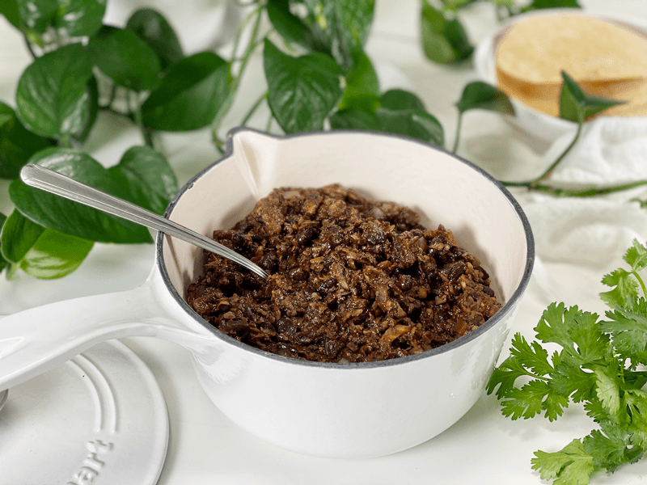
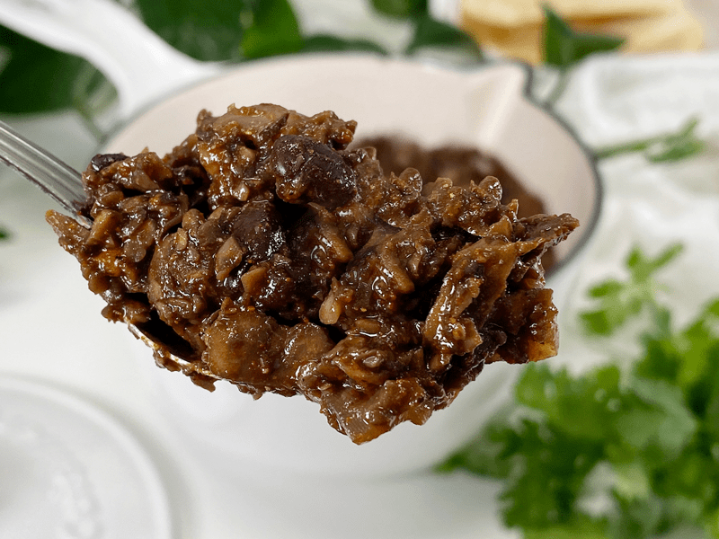

Vegan Taco Meat | Cooked | Mushroom, Black Bean | Oil-Free
Today, I am sharing with you one (I confess— I have several) of my absolute favorite ground vegan taco meat recipes. With my easy-to-make homemade taco seasoning and a secret ingredient…this is the most flavorful and juiciest vegan taco meat I’ve made so far. It’s perfect for loading up on soft or hard shell tacos and topping with all your favorites!

As of late, I have been running a one-woman tortilla factory in my kitchen…not a legit one (of course) but tortillas were flying around like nobody’s business. I think I found a new passion, and a tasty one at that. With all these tortillas stacking up, I decided I better create some tasty fillings so I could put them to good use. Insert vegan taco meat!
In the vegan community, mushrooms are well known for being a meat substitute, and it just so happened that I had picked up two pounds from our local co-op. Now, I know that not everyone likes mushrooms. I was one of those people for 35 years of my life, but when I started eating raw foods, my tastebuds shifted. But if you just can’t get past them I have three other options for you — my cooked Jackfruit and Black Bean Taco Meat, raw vegan Taco Walnut “Meat,” and raw vegan Lentil Taco meat. But, if you are a mushroom lover or one who is willing to explore, let me take a moment to talk about the ingredients used in this recipe.
Ingredient Run-Down
Mushrooms
- Mushrooms easily act as an earth meat in a plant-based diet.
- I used my all-time favorite, fresh organic crimini mushrooms. They are small to medium in size and have a rounded cap with a short, stubby stem. The smooth cap ranges from light to dark brown and is firm and spongy. The short white stem is also edible, so I diced them up as well–no waste. They are mild and somewhat earthy, with a meaty texture.
- If you don’t like to eat the mushroom stalks, pop them off and save for making soup stock.
- Time-saving tip: I have made this over and over…to reduce my prep time with chopping 2 pounds of mushrooms, I pulsed them in the food processor, fitted with an “S” blade, in small batches.
Black Beans
- I added black beans to this recipe to stretch the taco meat a little farther and for the added nutrients.
- You can use home-cooked black beans or canned.
- If you use canned, aim for brands that use BPA-free cans and are organic. This recipe will take one 15-oz can. Do not drain any standing liquid in the can; use the beans and liquid.
- Since the beans are already cooked, they will be added towards the end of the cooking time. The goal is to warm them, along with the other ingredients. We don’t want them to turn to mush.
Tomato Paste
- Most taco seasoning packages require you to add water to the pan. In place of water, I used tomato paste, which is the secret ingredient that I mentioned above.
- The tomato paste thickens it up and helps the spices stick to the vegan meat.
- It also adds a depth of flavor to the dish.
- If you wish to make your own click (here). Scroll to the bottom to see a tomato paste tip.
Taco Seasoning
- This seasoning is the “secret sauce” of this recipe. It is simple but gives the perfect combination of flavors.
- If you are in a pinch, you can use a seasoning packet with the recipe, but I really love it with the homemade version of the seasoning. You can find my recipe (here).
- Regardless of what version of taco seasoning you use, add enough to satisfy your taste buds. I know many people who like their taco meat strong-tasting, while others like it mild in flavor.

I took a close-up photo so you can get an idea of the texture.
Various Ways to Enjoy Vegan Taco Meat
- Tacos: How about my corn tortillas? If you can’t or don’t eat corn, I have several corn-free, gluten-free, vegan wraps (here). If you enjoy raw foods, I have a raw vegan corn tortilla recipe that you might enjoy as well. Another plant-based option is to use lettuce wraps.
- Taco salad / Burrito bowls: Fill a bowl with lettuce greens, taco meat, diced onions, tomatoes, and olives. Choose from the many vegan cheese recipes on my site, such as my cooked sweet potato-based Amie Sue’s Vegan Groovy Cheese Sauce, my agar-based, shreddable Mozzarella Cheese, cashew-based Queso Blanco Mexican Cheese Dip, or my Touchdown Spicy Cheese Dip.
- Stuffed bell peppers: I have a recipe on my site for stuffed bell peppers, Use the same baking technique, but replace the filling with this vegan taco meat and top with vegan cheese and my cashew-based sour cream.
- Tostadas: Bake my corn tortillas in the oven until crisp to create tostadas. Top with your favorite Mexican condiments.
- Enchilada filling: Have a favorite enchilada recipe?! Replace the meat filling with this vegan version.
- Burrito filling : Use the same approach to burritos as you would tacos.
- Nachos: Have you tried my raw vegan Nacho Chili “Cheese” Corn Chips? They make a great base for plant-based nachos.
Meal Prep Tacos
- You can make the taco filling ahead of time, keeping it in the freezer for up to 3 months, or in the refrigerator for up to 4 days.
- Batch Cook: A good way to save time in the kitchen is to batch cook the taco meat. You can prepare several pounds at once and freeze what you don’t use.
- Freeze: You can freeze meal portions in freezer bags or containers to have taco filling at your fingertips.
- Reheat: Reheat the vegan meat in a frying pan; add a splash of water while cooking so it doesn’t dry out.
 Ingredients
Ingredients
Yields 4 1/2 cups
Preparation
- Before using the mushrooms, remove any soil and grit. If necessary, trim the ends of the stalks.
- Place a large frying pan over medium heat; add the chopped mushrooms and diced onions. Cook until the mushrooms turn darker brown (not burnt but brown)
- Mushrooms contain a lot of moisture, so you don’t need any water to do the typical water sauté. It might fool you at first, but just keep stirring it around, and soon you will start to see the liquid release.
- I cooked mine until almost all the water released cooked back up, which took nearly 10 minutes. Don’t let them dry out.
- Once the mushrooms and onion have fully cooked down, add the black beans, tomato paste, and taco seasoning. Stir thoroughly and cook for another 10 minutes or so.
- I provided a link for the taco seasoning recipe that I use. I used 2 tablespoons worth, but you can use less or add more. Make YOUR tastebuds happy.
- Enjoy! Leftovers should be stored in an airtight container in the fridge for 3-5 days.

Food Tip: If you have leftover tomato paste, freeze it in 1 Tbsp measurements. Once frozen, pop them out and put in a freezer-safe container.
© AmieSue.com